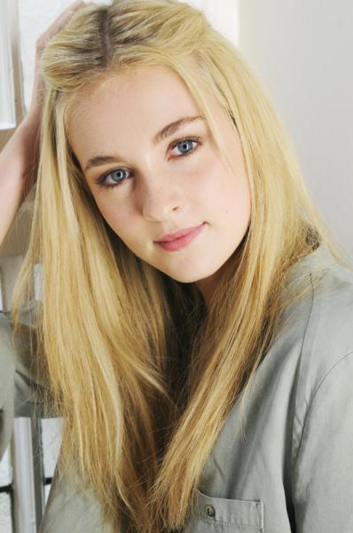

Ruby Gardina DelacourAbout:1. Ruby Gardina Delacour was born to Maxwell John Perkins and Gabrille Alena Delacour in June 30 2009. Her father died before she was born, her family name remained Delacour. 2. Her only sibling is Adelena Fluer Delacour. 3. She was sorted into Ravenclaw house when he first went to Hogwarts School of Witchcraft and Wizardry in 2020, at the age of 11. 4. Her godparents, as well as her uncle and aunt are William Arthur Weasley and Fluer Isabelle Delacour. 5. She is a half blood witch. 6. She wasn't appointed as Prefect, Head Girl or Quidditch Captain. Characteristics: 1. Charming 2. Cute 3. Sleepy Possesions: 1. Her Father's braclet 2. Her portable make up kit 3. A 9", Silverlime Wood, Dragon Heartstring Wand Other Details: Eye Colour - Blue Hair Colour - Blonde Height - 137cm (1st year) Height - 168cm (7th year) Species - Human Gender - Female Patronus - Robin Boggart - water Favourite Colour - Neon Pink Nickname - Ru Speciality - Acting Later Life: Married To: Frank Algie Longbottom Kids - Hannah Alice Longbottom (February 29, 2040) Professions - Model |
 |